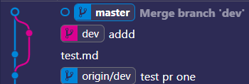
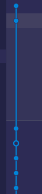

撤销
存在工作目录.代码并没有提交到暂存区(没有进行
git add操作).在工作树中修改# 需要撤销的文件或者 .(当前目录) git checkout <filname>代码提交到暂存区(进行了
git add),但是想要撤销提交# 需要从暂存区撤销的提交 git reset HEAD <filename>代码已经提交(
git commit)- 已经进行多次提交,但是在最后一次修改后,不再产生新的提交
# 注释名为最后一次的 git commit --amend -m "最后一次的注释"
如果想撤销到其中某次commit
- 这些操作分别是对工作目录,暂存区,当前HEAD的位置的改变
git reset [--hard|soft|mixed|merge|keep] [commit|HEAD]--hard:重设当前HEAD位置.并将之前commit以来的工作区目录和暂存区的改变都丢弃- 彻底回退到某一个版本.本地所欲的源码也会变为上一个版本的内容
- 例如
git reset --hard HEAD~1:将代码回退到前一次提交,并且将之前的所有改变丢弃
--soft:只重设当前HEAD位置.所有更改的文件会回到工作区目录和暂存区git status可以查看回退的状态.只是回退了提交的信息,不会回退提交的内容.
--mixed:重设当前HEAD位置和暂存区位置.但是不会重设工作区的内容git status:查看回退的状态.已经回退到初始状态(没有使用git add之前)- 例如
git reset --mixed HEAD~1:将代码回退到上一次提交.提交内容保留在工作区
回滚
如果已经使用
git push,推送到远程仓库中.对已经提交到远程仓库的还原操作叫回滚
- 撤销本地仓库的提交
revert:放弃指定提交的修改,会生成一次新的提交,并且以前的历史记录都在- 例如:
git revert HEAD~1.将代码回滚到上一次的提交,但是不会销毁之前提交,并且生成一个新的提交
- 例如:
reset:是指将HEAD指针指到指定提交,历史记录中不会出现放弃的提交记录(会销毁之前的提交)
- 对远程仓库的提交进行回滚(撤销远程仓库的提交)
- 需要强制将本地回退的代码推到远程仓库,进行回滚操作
git push origin 本地分支 --force-with-lease--force-with-lease并不会像--force强制将代码覆盖- 如果远端有其他人推送了新的提交,那么推送将被拒绝,并且和
--force参数时的拒绝是一样的 - 如果远端没有其他人推送,会直接进行强制推送(回滚)
- 如果远端有其他人推送了新的提交,那么推送将被拒绝,并且和
如果没有其他人推送提交时
git reset --hard HEAD~1
git push origin 本地分支 --force-with-lease当遇到其他人推送新的提交时(产生冲突),需要使用
git fetch
- 在
git fetch之后需要合并fetch下的分支.需要考虑使用rebase和merge情况rebase会将分支合并到一个分支,不会保留被合并分支的提交记录.保证主分支的纯粹merge会将分支合并到一个分支,会保留被合并分支的提交记录- 
- 在开发中尽量选择rebase合并分支,来保证主分支的清晰
- 继续推送以达到回滚的效果
merge和rebase
rebase:下游分支更新上游分支内容的时候使用merge:上游分支合并下游分支内容的时候使用git pull origin dev --rebase更新当前分支的内容时一定要使用--rebase参数
例如现有上游分支
master,基于master分支拉出来一个开发分支dev,在dev上开发了一段时间后要把master分支提交的新内容更新到dev分支此时切换到
dev分支,使用git rebase master等dev分支开发完成了之后,要合并到上游分支master上的时候,切换到master分支,使用git merge dev
撤销回退

如果在回退的时候回退过了怎么办
使用
git reflog找到当前的提交记录的commit值(hash值)bf75e3e (HEAD -> dev, upstream/master, origin/test, origin/master, origin/dev, origin/HEAD) HEAD@{0}: reset: moving to HEAD~1 e87c01a HEAD@{1}: reset: moving to HEAD~4git checkout bf75e3e.检出需要撤销到某一版本的提交git branch mer为需要找回的版本创建新分支git branch dev&&git rebase mer切换分支并且合并分支git push origin dev --force-with-lease.强制推送到远程仓库,完成撤销的回退
stash
git stash将工作副本暂时搁置到到一个栈(提交越迟,越早弹出,即索引越小)中,以便切换分支处理其他内容
git stash:如果当前分支中的内容处于已暂存的状态(git add .)git stash -u:如果当前分支未暂存,则需要添加--include-untracked- **注意:**一些基础配置文件不能暂存,需要立刻提交,如
.gitignore等
*.js- 如果此时
.gitignore没有提交,这时候忽略.js结尾的文件并不会起作用,.js结尾的文件会和.gitignore一起被搁置到栈中(但是此时切换分支忽略文件依然会被切换到另一个分支)
git stash save "message":如果需要搁置多个内容到栈中,则可以使用message来命名- 同样,如果没有暂存则需要使用
git stash save "message" -u
- 同样,如果没有暂存则需要使用
重新应用搁置栈中的工作副本
git stash apply stash@{index}:重新应用搁置栈中的工作副本,但是不会删除当前栈中暂存的状态git stash drop stash@{index}:删除某个栈中的工工作副本,需要使用索引
git stash drop stash@{0}git stash pop:弹出最后一次提交到栈中的工作副本,并且同时删除栈中的工作副本- 或者直接指定需要应用的版本,与
apply相同
# index指索引号,索引越小,离栈顶越近 git stash ( pop | apply ) --index index # 或者直接使用 stash@{index} git stash ( pop | apply ) stash@{index}- 或者直接指定需要应用的版本,与
清理栈中的内容
git stash clear:将栈中的所有内容清理git stash drop:清理指定版本
查看存储差异(需要暂存之后才可以比较:
git add .)
git stash show:查看存储的摘要git stash show -p:查看存储的完整差异(-p=–patch)
从stash中创建分支
git stash branch <name> stash@{1}- 在此分支的基础上:创建一个叫做<name>的分支,同时删除
stash{1}的存储.此时指针不会指向原来分支,而是会指向<name>分支 - 如果在最新版本中遇到冲突时,这将会很有用
- 例如你搁置了该文件的更改到栈中,但是之后并没有理会,继续在该文件中做更改,这是就可以使用此方法